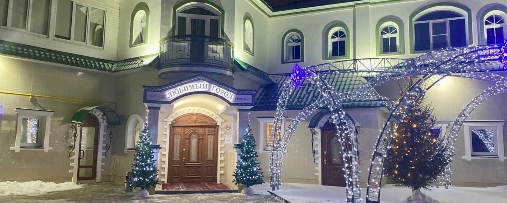
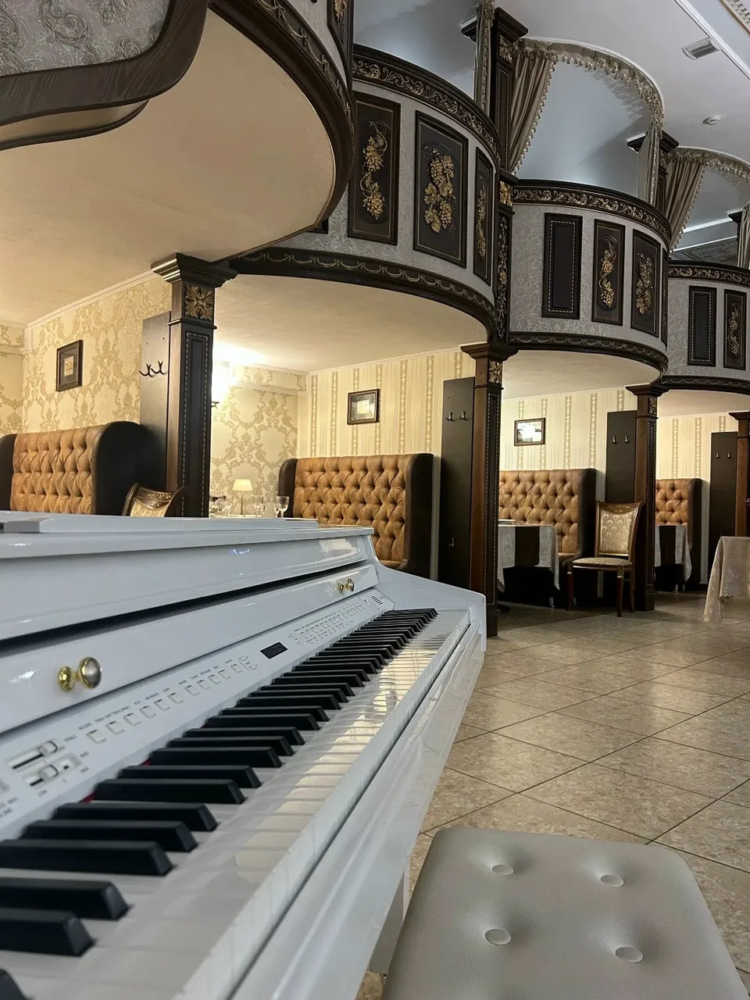
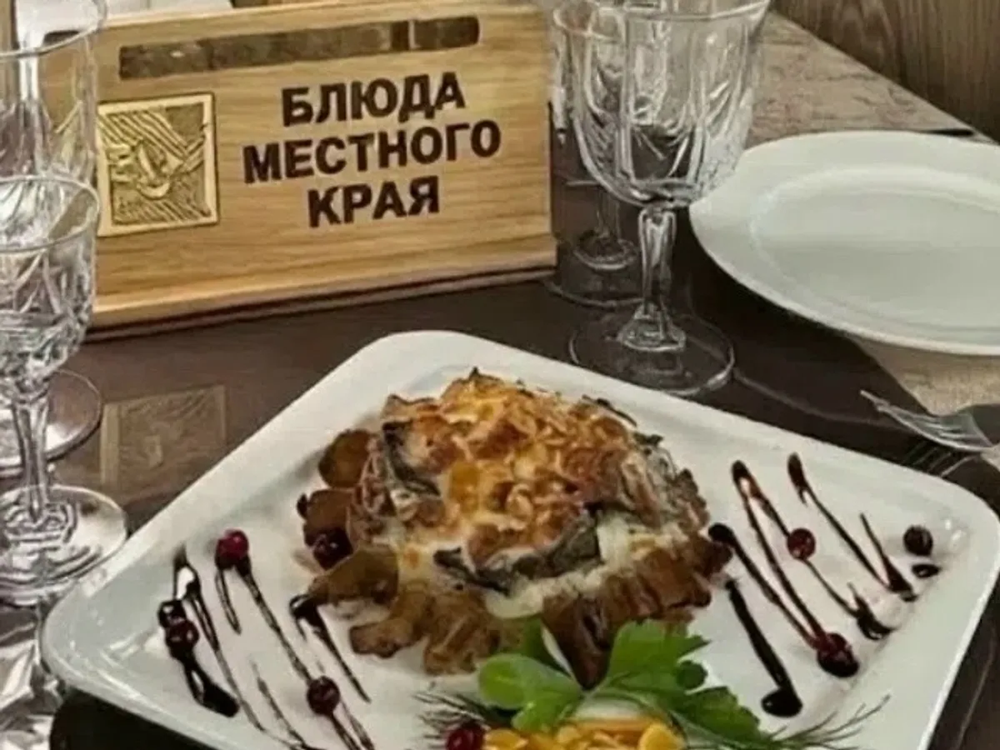
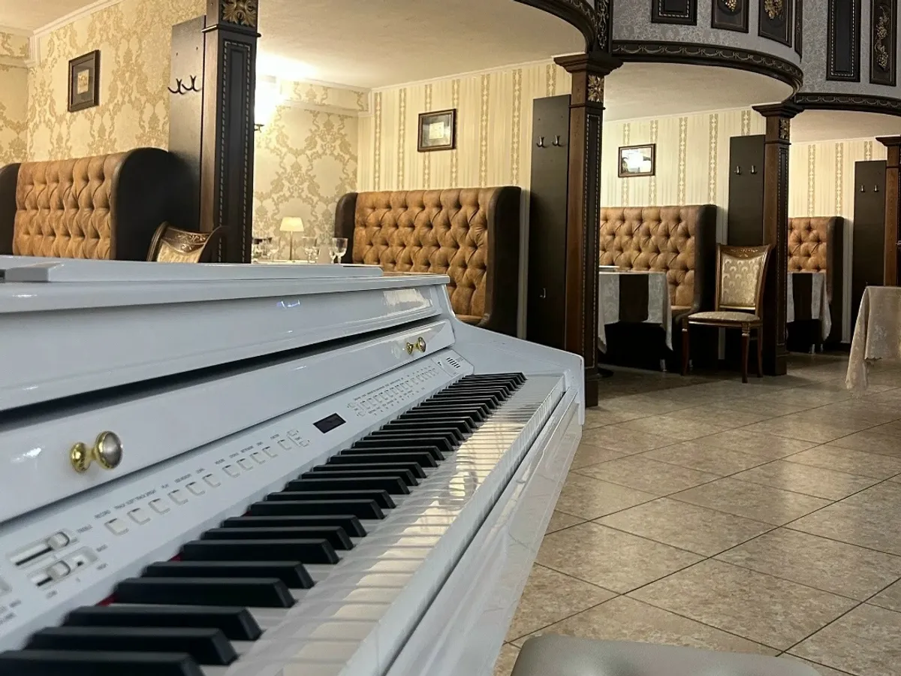
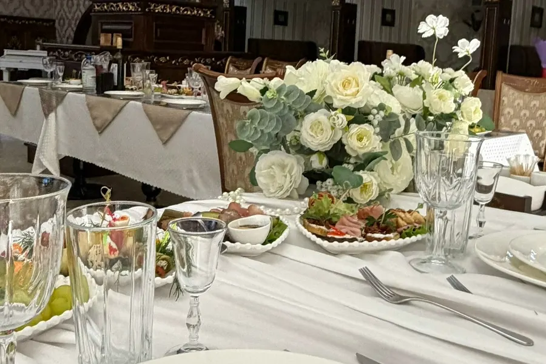
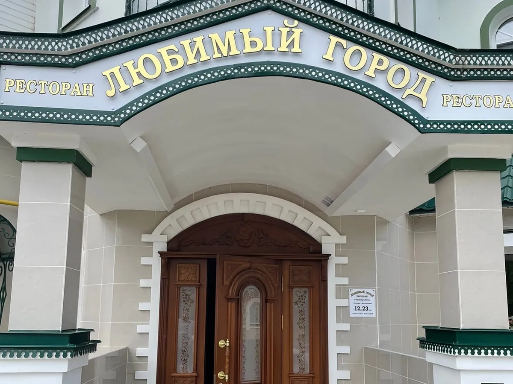

Ресторан «Любимый город» в Великом Устюге
Блюда Вологодского края, банкеты и праздники. Площадь Коммуны, 1.
вторник – воскресенье, 12:00 – 23:00

Сегодня в Великом Устюге
Сегодня работаем12:00 – 23:00
Столик на компанию или праздник лучше бронировать заранее.
Вторник – воскресенье с 12:00
- Пнвыходной
- Вт12–23
- Ср12–23
- Чт12–23
- Пт12–23
- Сб12–23
- Вс12–23
«Режим работы: вторник – воскресенье с 12 до 23 часов. Понедельник – выходной.»
Так написано на табличке у входа в ресторан.

Блюдо из раздела «Блюда местного края». Фото со страницы ВКонтакте.
Блюда Вологодского края
- Оливье по-русски с разварной лосятиной и солёными грибочками200 г · 400 ₽
- Грузди солёные с картофельными дольками100/80/60 г · 500 ₽
Грузди, картофель, сметана, брусника, лук.
- Щи томлёные с белыми грибами и лосятиной300/50 г · 500 ₽
- Ржаная калитка с мясом лося450 г · 890 ₽
Мясо лося, сливки, лук фри, сыр моцарелла, зелень.
- Говядина таёжная с белыми грибами на сковородочке400 г · 900 ₽
Говядина, белые грибы, картофель, сливки, сыр моцарелла, зелень, брусника.
- Жаркое с лисичками в горшочке450 г · 700 ₽
Лисички, картофель, лук, морковь, сыр моцарелла, сливки, болгарский перец.
- Биточки из щуки с картофельным пюре и перечным соусом420 г · 590 ₽
Цены с меню ресторана на странице ВКонтакте. Остальные разделы меню смотрите на страницах выше. Еда с собой: от 500 ₽.
Что пишут гости
«Интерьер приятный, комфортный. Нас встретили очень приветливо, персонал вежлив»
Гость ресторана, 23 июля 2026


Банкет, праздник или встреча большой компанией
Накрываем столы под вашу компанию: зал с резными колоннами и диванами, на праздниках бывают живая музыка и диджей. Цену банкета называем до бронирования.
- Залдо {{N}} гостей
- Меню банкетауточнить по телефону
- Кейтерингесть
- Броньпо телефону, заранее

Как нас найти
Ресторан на площади Коммуны в Великом Устюге. Ищите зелёно-белое здание с золотой вывеской «Любимый город» над резными деревянными дверями.
- АдресВеликий Устюг, площадь Коммуны, 1
- Часывторник – воскресенье 12:00 – 23:00, понедельник выходной
- Телефон+7 921 052-80-90
- Еда с собойот 500 ₽
- Признаниенаграда «Сердце гостеприимства», октябрь 2026
Забронируйте стол в «Любимом городе»
Позвоните, и мы оставим для вас стол. Для банкета и большой компании назовём цену до бронирования.
вторник – воскресенье, 12:00 – 23:00